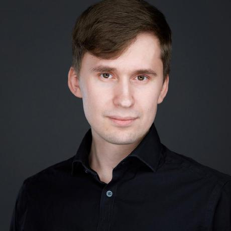

Артём Бандин
Основатель. Руковожу разработкой в Rang. В Лёгкой стоматологии руковожу маркетингом, продуктом и IT.
Бизнесы
- Rang.ai — управляю разработкой.
- Лёгкая стоматология — маркетинг, продукт и IT.
- Агентство интернет-маркетинга Интенсивность — прошлый проект.
- Агентство медмаркетинга Медмаркетолог — прошлый проект.
- Kidber.ru — агрегатор детских активностей и развивашек.
- Самое главное — сервис саммари книг.
Достижения в Лёгкой стоматологии
- самый трафиковый сайт стоматологии в РФ
- первая сквозная аналитика в стоматологии в РФ
- первая AI-BI в стоматологии
- AI заполнение медкарт
- первая стоматология со SCRUM подходом
- приложение клиники
Посты
LLM и большой контекст — пост из Telegram-канала про задачи, где решает большой контекст.
Навык пробовать самому руками — заметка про привычку быстро проверять идеи на практике.
Размер контекста мозга человека — пост про ограничения внимания и полезность LLM.
Контакты